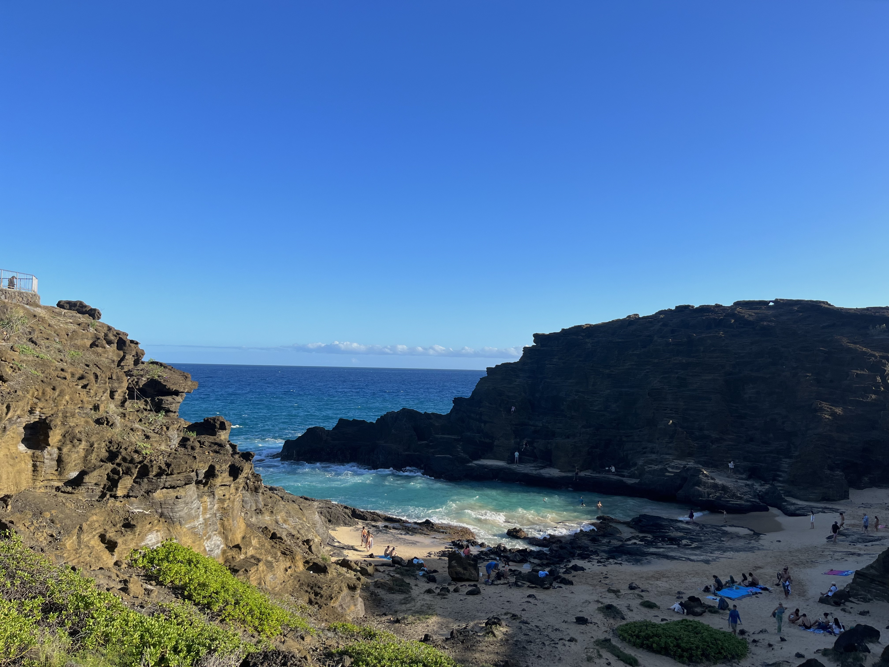

Discover the beauty and excitement within your own country through domestic travel.
My favorite domestic trip so far in the USA has been Hawaii. Hawaii has been my favorite trip for the very fact that it is still in the USA, but has the least amount of influence from the USA. It feels as though you are in a different country when you are in Hawaii. When in Hawaii, it is essential to immerse in local culture. We went to the island O'hau, where Honolulu is located. This is the most touristy island, and if you're going to Hawaii for the first time, this is the best place to start. I would highly reccomend getting a rental car. This island is easy to drive around, and there are so many amazing attractions beyond the main Honolulu strip to see. Some sights include the Dole plantation, North Shore beach, and many more.
